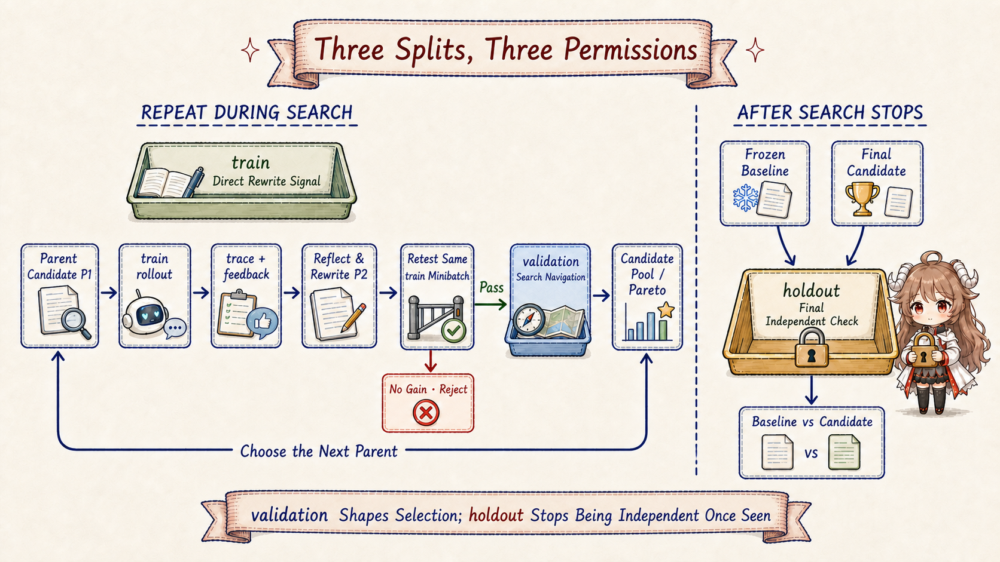

1. Reusable Does Not Yet Mean Better
At the end of Chapter 4, generated-code-testing exists in the Skills directory and future sessions can discover it.
Now suppose we want to improve it: the Skill should recognize stale generated output, accidental edits to generated files, and incomplete test runs,
not merely remember “generate before testing.” The easy approach is to ask a model for a fuller version and try it on one task. If that task succeeds, is the Skill better?
Not yet. The second task may be easier, the first run may already have repaired the environment, or the model may simply choose the right tool by chance. Even when the new Skill caused the success, it may have memorized one example. Turning “it worked once” into “this version is more reliable” requires fixed tasks, fixed scoring, fixed runtime conditions, and a set of tasks the search process never saw. Evaluation data is that comparison ruler.
This chapter deliberately stops before DSPy and GEPA rewrite any text. It answers four earlier questions: what one evaluation record contains; where tasks come from; what train, validation, and holdout are allowed to influence; and how the current Hermes self-evolution prototype reads and splits them. Without those boundaries, a higher score has no trustworthy meaning.
The short answer to the common split question: train participates in execution, failure reflection, and candidate rewriting. Validation does not directly feed its tasks to the reflector as rewrite material, but its scores rank candidates and determine which parent search continues from. Holdout opens only after search stops and compares the frozen baseline with the final candidate. Validation therefore shapes the Skill indirectly; it is neither a second training phase nor a sealed final exam.
2. Start With a Fair Comparison: What Is One Evaluation Task?
Continue with the generated-code testing Skill. First freeze the current SKILL.md as the baseline, so every later candidate has the same origin.
Then write a task: “After a schema change, the report importer no longer matches generated types. Find the cause and verify the fix.”
The task says what the user needs; it should not quietly reveal the diagnosis.
Separately, write the requirements for a good result: check whether generated code is stale, run the real generator, inspect the generated diff,
execute the target test, and explain why old output caused the failure. This is a rubric rather than a verbatim answer.
Hermes self-evolution stores the pair as an EvalExample: task_input is sent to the agent, while
expected_behavior remains available to the metric or judge.
task_input
A schema change broke the report importer. Find the cause and verify the fix.
expected_behavior
- check whether generated code is stale
- run the project's real generation command
- inspect generated-file changes
- run the target test and explain the failure
The fields must stay separate. If “check stale generated code” appears in the task, the agent can echo the clue and score well without learning to notice it independently.
The DSPy conversion preserves expected_behavior on the Example for the metric, but declares only task_input as program input:
dspy.Example(
task_input=ex.task_input,
expected_behavior=ex.expected_behavior,
).with_inputs("task_input")
The record, JSONL persistence, and conversion appear in
EvalExample and EvalDataset.
difficulty and category describe coverage; source records provenance. None is a second answer key.
2.1 Score Says How Bad; the Execution Record Says Why
Next, the baseline actually runs the task. One execution of a version on one task is a rollout; the steps it takes form a trace. Suppose the baseline reruns tests but never invokes the generator, so the failure remains. The evaluator assigns a low score and returns feedback such as “did not check whether generated files were stale.” Scores make candidates comparable; trace, output, and feedback expose the failure mechanism.
The optimizer proposes a candidate that adds “after schema or interface changes, inspect the generation step and generated diff first.” That candidate must rerun under the same task, model, tools, budget, and rubric. If those conditions differ, a score change cannot be attributed to the Skill. If we compare only the two Markdown files without executing the task, we know only that one sounds more complete.
| Fixed Element | Why Fix It | Confounder When It Changes |
|---|---|---|
| Baseline version | Every candidate has the same origin | The comparison has no stable reference |
| Task and rubric | Both versions face the same difficulty and scoring | The new task is easier or scoring is looser |
| Model, tools, budget | Both versions use the same equipment | The runtime, not the Skill, improved |
| Execution and metric | Compare behavior rather than prose | The new version is merely longer or more answer-like |
3. Where Tasks Come From: Three Authors, One Record Shape
One task explains the unit but cannot support optimization. A candidate may memorize that schema change or work only for one test command. We need tasks across difficulty, failure types, and user wording, each with a rubric written before optimization begins. The current prototype supports three source paths: synthetic tasks, a human golden set, and real sessions.

EvalExample shape.3.1 Synthetic Tasks Solve Cold Start
With no history, SyntheticDatasetBuilder gives the complete baseline Skill to a generator model and asks for
task_input, expected_behavior, difficulty, and category. For the testing Skill, it can quickly create cases for schema changes,
missing generated files, accidental generated-file edits, and partial test runs. Empty tasks or rubrics are dropped before shuffling and splitting.
This route starts the system quickly but inherits the baseline's field of view. If the old Skill repeats “run the generator,” synthetic tasks may orbit that phrase;
if it never considered cross-platform scripts, the generator may share the blind spot. Synthetic data builds an initial ruler; by itself it cannot prove real-world improvement.
See
SyntheticDatasetBuilder.generate.
3.2 A Human Golden Set Adds Risks the Baseline Cannot Name
A golden set is not a file of exact output strings. People write or review tasks and rubrics directly. That makes it expensive, but it can deliberately add high-risk cases the baseline omitted and state auditable conditions such as “tests pass,” “the diff is empty,” or “hand-written files remain unchanged.” Human design breaks the loop in which the old Skill defines the entire evaluation universe.
GoldenDatasetLoader prefers pre-split train.jsonl, val.jsonl, and holdout.jsonl.
With only golden.jsonl, it shuffles and applies a 50/25/remainder split. Pre-split files are safer when sessions, projects, and difficulty families must stay together.
3.3 Real Sessions Bring Back What Users Actually Ask
The third route reads histories from Claude Code, GitHub Copilot, and Hermes Agent. Real wording and project pressure can expose failures the baseline never imagined. But a history message is not yet an evaluation example. Most messages may be irrelevant, and the old assistant response may be precisely the failure being repaired. The route must filter messages and generate a new rubric rather than treating old output as truth.
| Source | How Tasks Arise | How Rubrics Arise | Main Risk |
|---|---|---|---|
| Synthetic | A model reads the baseline Skill | The same generation creates a rubric | Copies the baseline's focus and blind spots |
| Golden | People write or select high-value tasks | People review requirements or executable checks | Expensive; coverage depends on design |
| Real sessions | User messages are filtered from history | A relevance model derives a rubric from Skill and context | Privacy, noise, and judge bias |
4. Why Real Sessions Pass Through Two Gates
Scoring every historical message with a model is slow and expensive. RelevanceFilter first uses cheap lexical rules:
the full Skill name, long words from the name, and overlap with keywords from the first 500 characters of the Skill.
If that yields too few candidates, it samples from the remaining messages so differently worded but relevant tasks are not excluded entirely.
The second gate calls an LLM with the Skill name, its first 800 characters, the user message, and up to 1000 characters of the previous assistant response.
It judges relevance and creates a new expected_behavior, difficulty, and category. The old response is context, never a golden answer.
The two stages appear in
RelevanceFilter.
4.1 Data Hygiene Includes a Privacy Boundary
Before records are created, importers reject common API keys, tokens, authorization headers, private keys, database URLs, and password/secret assignments. Task text is capped at 2000 characters and difficulty is normalized to easy, medium, or hard. These rules block obvious leakage; they are not full anonymization. Repository names, customer names, internal URLs, and business data can still appear as ordinary text, so shared or long-lived datasets need additional redaction and human review.
Secret patterns and field validation live in
external_importers.py.
Accepted messages are then combined and split by
build_dataset_from_external.
5. Train, Validation, and Holdout Have Different Permissions
Suppose generation leaves 20 valid tasks. The default ratios produce roughly 10 train, 5 validation, and 5 holdout examples. No neural-network weights are updated here; Skill text is the target. The three splits differ not by schema but by how much they may influence search.

5.1 Train Exposes Failure and Produces a Rewrite
Search selects a parent P1, samples a train minibatch, executes the tasks, and records traces, outputs, scores, and feedback.
The reflector reads those failures and proposes P2. The candidate reruns the same minibatch; without improvement it is rejected immediately.
Train therefore supplies the direct rewrite signal: the optimizer sees which task failed and why before changing text.
5.2 Validation Does Not Write Text, but It Chooses the Direction
Candidates that pass the train check execute on validation. Per-task scores update the candidate pool and Pareto frontier and influence which candidate becomes the next parent. Validation tasks are not normally handed to the reflector as direct instruction-writing material, but their scores decide which lineages survive. Validation supplies a search navigation signal and therefore shapes the final Skill indirectly.
“Train produces a Skill, then validation optimizes it” is therefore misleading. The two sets alternate: train proposes, validation selects, and the selected parent returns to train.
Repeatedly steering by validation can overfit validation too. Current DSPy GEPA still states the contract explicitly: trainset performs reflective updates;
valset tracks Pareto scores. If valset is omitted, trainset is reused and the implementation warns that this encourages overfitting to supplied tasks.
See
GEPA.compile.
5.3 Holdout Opens Only After Search Stops
Once search selects a final candidate, the frozen baseline and that candidate both execute the holdout tasks under the same metric. Holdout has no return arrow. If the result causes another edit, those tasks have entered development and cannot be called unseen evidence again. Further work requires treating viewed tasks as development data and preparing a new final holdout.
| Split | When It Opens | What It May Influence | What It Cannot Prove |
|---|---|---|---|
| train | Every search round | Rollouts, feedback, reflection, candidate rewrites | Generalization to unseen tasks |
| validation | Repeatedly during search | Ranking, Pareto frontier, next parent | Final independent acceptance |
| holdout | After the final candidate freezes | One baseline-versus-candidate comparison | Remain unseen after its score guides another edit |
6. What the Current Hermes Prototype Actually Reads and Splits
One evolve_skill.py run selects golden, sessiondb, or synthetic; it does not automatically combine all three.
The name sessiondb is broader than it sounds in this implementation: the path attempts to combine Claude Code, Copilot, and Hermes histories,
not only Hermes SessionDB.
if eval_source == "golden":
dataset = GoldenDatasetLoader.load(dataset_path)
elif eval_source == "sessiondb":
dataset = build_dataset_from_external(
sources=["claude-code", "copilot", "hermes"], ...
)
elif eval_source == "synthetic":
dataset = SyntheticDatasetBuilder(config).generate(...)
trainset = dataset.to_dspy_examples("train")
valset = dataset.to_dspy_examples("val")
optimized = optimizer.compile(baseline, trainset=trainset, valset=valset)
# after search
holdout = dataset.to_dspy_examples("holdout")
Source selection appears in
evolve_skill.py;
train/validation optimizer wiring and the holdout comparison appear in the
same execution chain.
6.1 Random Files Are Not Automatically Independent
Synthetic generation, unsplit golden files, and the external importer use random.shuffle followed by positional slicing.
They do not persist a seed or group by session ID, project, task family, or semantic duplicate. Two paraphrases from one session can land on opposite sides;
the candidate appears not to have seen the holdout task even though it saw nearly the same answer pattern.
A rigorous run should deduplicate and group-split first: variants from one conversation, issue, or code sample stay together. It should then audit category, difficulty, and source coverage and record dataset version, generator model, rubric review, and random seed. Train/validation/holdout are permission boundaries, not merely filenames.
6.2 Tiny Datasets Can Leave Holdout Empty
Builders allocate at least one example to train and validation with max(1, ...); all remaining examples go to holdout.
With only two examples, train and validation each receive one and holdout is empty. The external importer warns that at least three examples are needed for a meaningful split,
but it does not stop execution. Later averaging uses max(1, len(scores)) to avoid division by zero. That prevents a crash; it does not create independent evidence.
A zero-score comparison over an empty holdout is not acceptance.
7. Inspect the Ruler Before Starting the Optimizer
The complete data path is now visible: sources are cleaned and normalized into one record shape; only the task enters the evaluated program; train gives direct rewrite signals, validation navigates candidate search, and holdout compares versions after search stops. The following checklist matters more than raw dataset size:
- Does each
task_inputresemble a real user task without revealing the answer? - Does
expected_behaviordescribe observable behavior, and has a domain reviewer checked it? - Do baseline and candidate use the same model, tools, budget, and metric?
- Are examples from one session, project, or task family kept in the same split?
- Does validation only navigate search, while holdout never feeds another rewrite?
- Does holdout contain enough tasks instead of relying on divide-by-zero protection?
We now have tasks, rubrics, and split permissions, but we have not shown which part of a Skill an optimizer can actually change.
The next chapter first separates DSPy's fixed I/O, fixed program structure, optimizable instructions, and metric; then it follows GEPA's reflection loop
and audits whether Hermes's current SkillModule truly exposes Skill text as an optimizable parameter.
Continue: DSPy, GEPA, and Hermes Self-Evolution.
Source References
- Pinned NousResearch/hermes-agent-self-evolution source snapshot
- EvalExample, dataset splits, and DSPy conversion
- Synthetic and Golden dataset construction
- Secret filtering, field validation, and lexical prefiltering
- LLM relevance filtering and rubric generation
- External-session aggregation and 50/25/remainder split
- Source selection, train/validation optimization, and holdout comparison
- Pinned stanfordnlp/dspy source snapshot
- DSPy GEPA trainset/valset contract